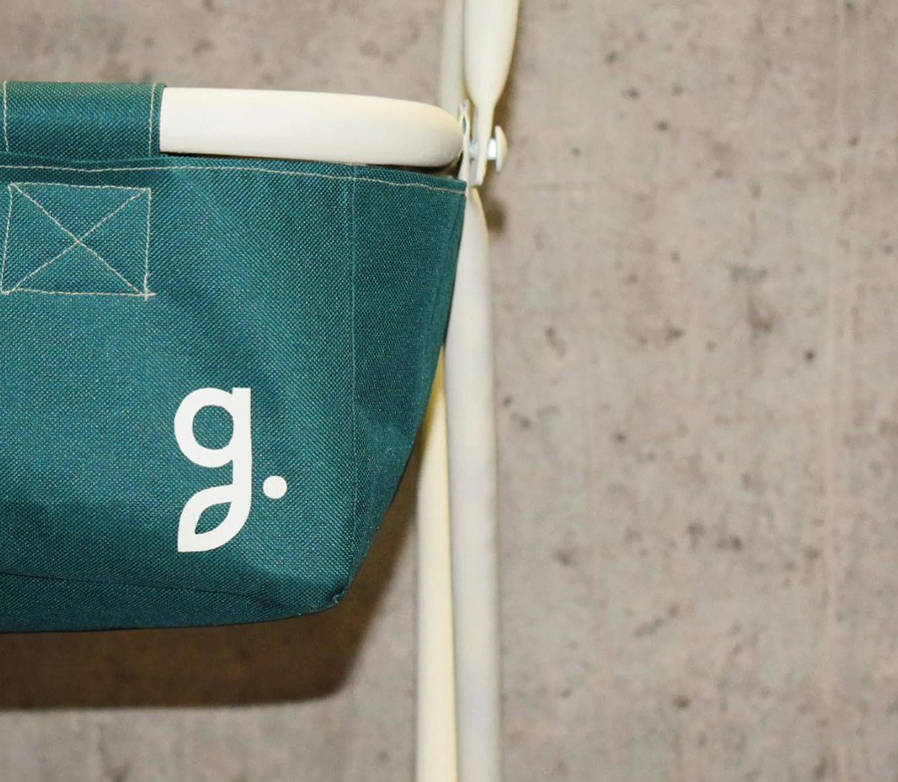
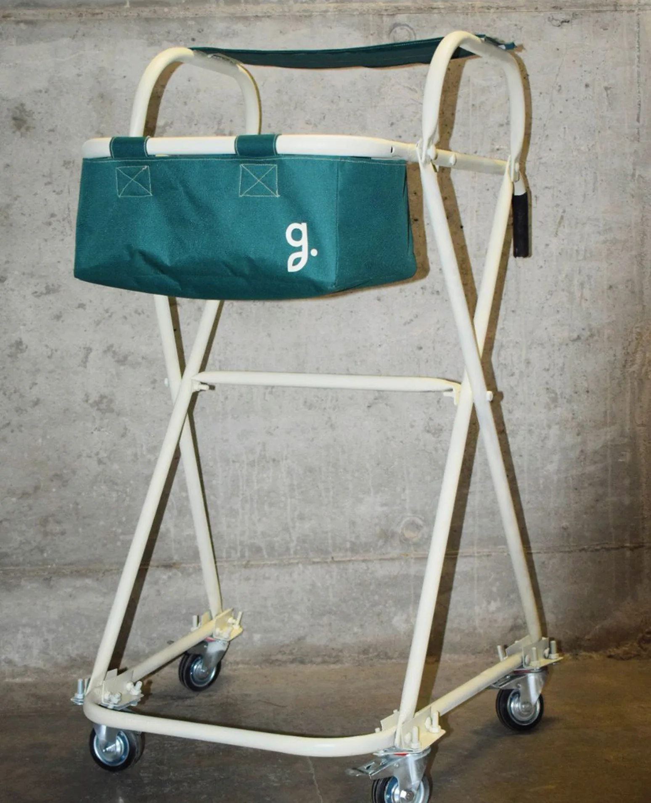
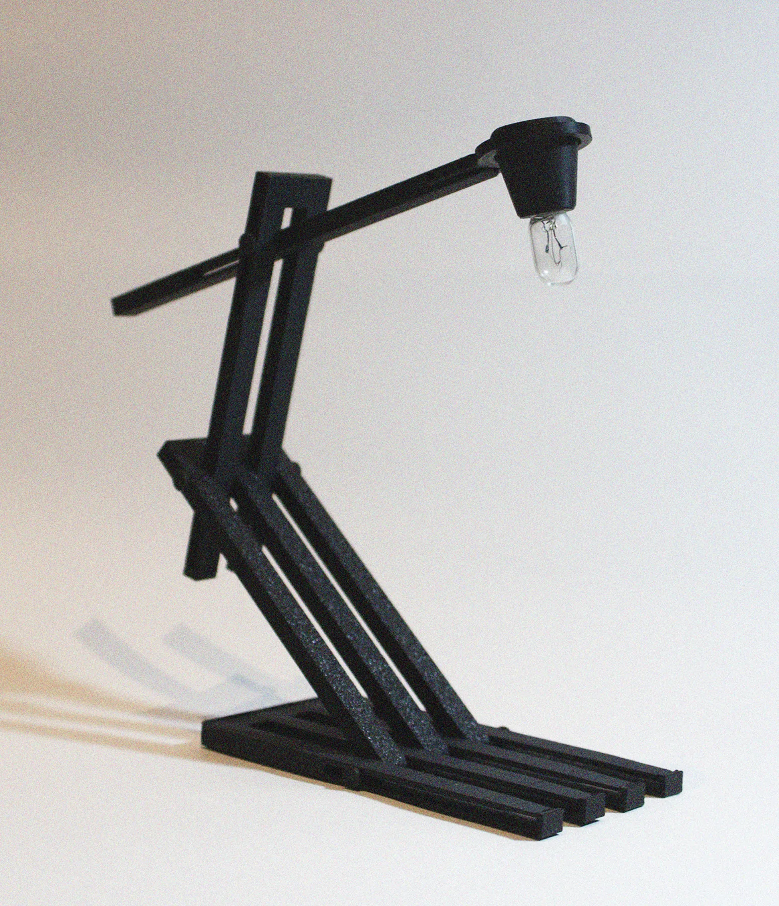
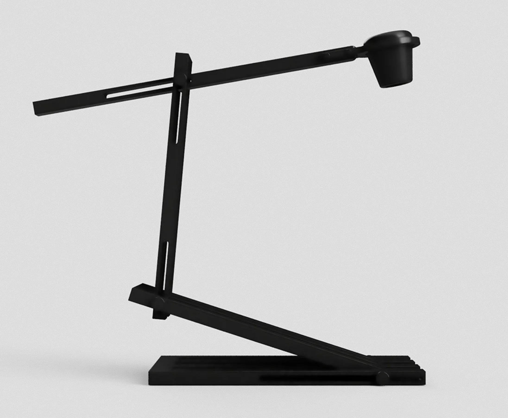
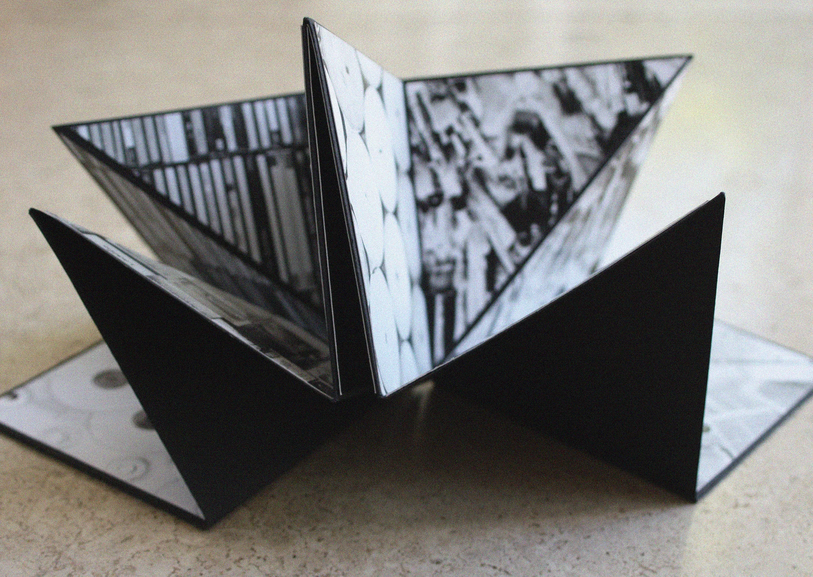
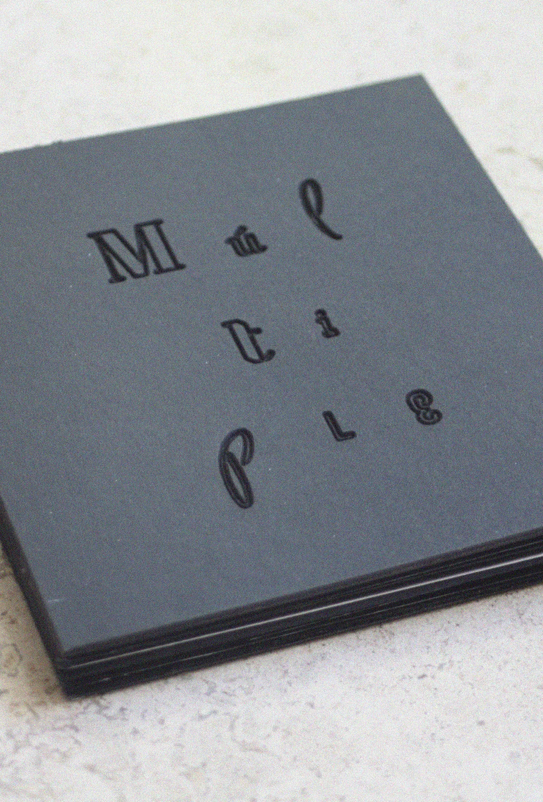

Craft & Making
Thinking also happens with the hands. A selection of objects and publications made through fabrication, prototyping and print.
Gardenia
2022 · Taller II · 5 designersAn ergonomic market trolley for older adults, with a sit support for resting, adjustable height and better weight distribution. It grew out of field visits to street markets.


rho.mob
2025 · Digital Design and Manufacturing · IndividualAn articulated lamp with movable arms in matte black, modelled in Fusion 360 and produced with FDM 3D printing.


Múltiple
2024 · Taller VI · IndividualAn artist's book exploring the shift from word to image through laser engraving, photography, cutting and folding.

